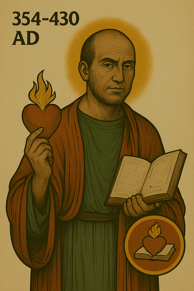
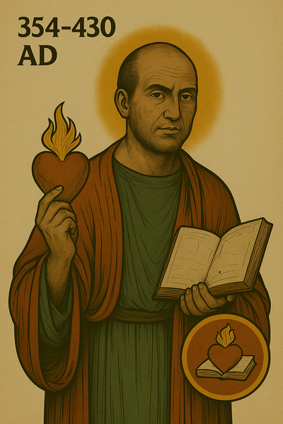

The CatholicismRocks Sticker Album
Marvel-style saint stickers, themed sections, collectible packs — made to bring the faith alive for young Catholics and their families.

 



The Saints Academy
A 36-week formation path for ages 6–13. Children become Saints in Training and complete weekly spiritual missions, themed by sacrament and virtue.
Support Our Mission
Help us print albums, supply schools, and reach Catholic families in need. Every donation brings a saint’s story to life.
Blog
Read updates, saint reflections, and behind-the-scenes insights from the CatholicismRocks team.
Forum
Join the conversation with other Catholic families, educators, and supporters of the mission.
Contact Us
Email: sean@catholicismrocks.org
Website: www.catholicismrocks.com